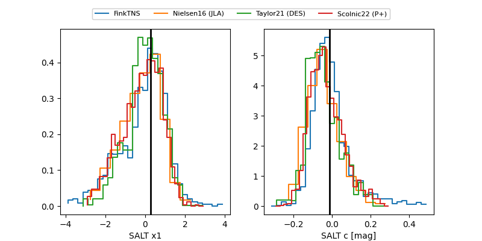

FINK: ZTF25aborzbd
Lasair: ZTF25aborzbd
ALeRCE: ZTF25aborzbd
TNS: 2025xao
YSE: 2025xao
ZTF25aborzbd (ztf,fink)
2025xao (tns,yse)
equatorial (ra, dec) = (10.5160,+51.24780)
galactic (l, b) = (121.4347,-11.59669)

last ztfg=19.76, ztfr=19.50
11 ztfg, 13 ztfr detections